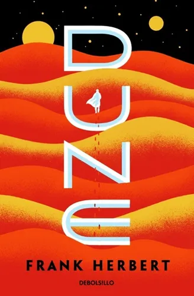
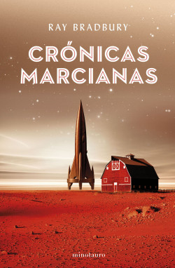

Fantasía
Dune

Dune - Frank Herbert
En un desierto implacable, un joven lucha por el control de una sustancia que define el destino del universo.
Neuromante

Neuromante - William Gibson
Un hacker caído en desgracia es contratado para una peligrosa misión que lo lleva a los límites del ciberespacio.
Fundación
Fundación - Isaac Asimov
Un matemático predice la caída de un imperio galáctico y crea un plan para preservar el conocimiento humano.
1984 - George Orwell
1984 - George Orwell
En una sociedad totalitaria, un hombre desafía al poder que lo vigila todo… incluso sus pensamientos
Crónicas Marcianas

Crónicas Marcianas - Ray Bradbury
Un conjunto de relatos poéticos y proféticos sobre la colonización de Marte y la decadencia humana.
La mano izquierda de la oscuridad
La mano izquierda de la oscuridad - Ursula K. Le Guin
Un embajador viaja a un planeta donde el género no existe, enfrentando desafíos culturales y políticos.
© 2025 Librería